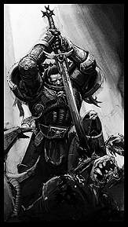
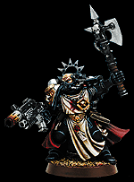

|

The Black Templars are the most fervent Crusading Chapter of the Emperor's loyal marines. These black-clad warriors have been on the longest running crusade to date; lasting over 10,000 years. During this time they have established Chapter Keeps on each world they conquer for the Imperium and recruit new Space Marines from the best warriors of the indigenous population. But the Black Templar's true home is amongst the stars. The entire Chapter is ship-based and includes many battle barges, strike cruisers and lesser escorts. The entire fleet is never one entitiy however. The High Marshal directs different sections of the Chapter to differnt corners of the galaxy, to deal with all manner of threats and continue the crusade.
The Black Templars are organized in a different manner than most Codex Chapers. In battle, orders are dictated by the Marshal who is the equivalent of a commander in an other Chapter. Troops are grouped quite differently as well. Black Templars squads contain a mix of both Initiates (Marines) and Neophytes (Scouts).
Over the years, the Black Templars have also developed specialized war machines that fit in with their aggressive combat style. During the Jerulas Crusade the Black Templars made use of a varient Land Raider to aid them in the numerous sieges that were required to reclaim the hive world. This Land Raider Crusader makes use of two 'hurricane' pattern bolters and is reinforced by additional armored plates.
The Black Templars are also as different in attitude as they are with their organization when compaired to other Chapters. When facing horrible odds and a significent loss of numbers, most other Space Marines would fall back and then counter-attack when the time is opportune. Not so with the Black Templars. They will never fall back in the face of danger. Instead, such is their determination and righteous zeal that they hurl themselves toward their hated foes!
|